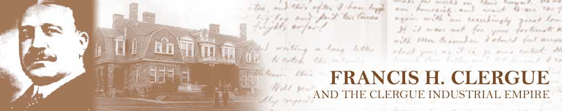

Home • Before Clergue • The Arrival • The Personality • Block House • Montfermier • Industrialization Process
Discovery Week • Collapse of the Empire • Rebirth • Clergue Letters
The Industrialization Process
It had long been acknowledged that the key to the industrialization of Sault Ste., Marie rested with the development of the hydroelectric potential of the St. Mary’s River rapids. By 1894, the failed attempts by a private syndicate and then by the Town of Sault Ste. Marie to develop hydroelectricity resulted in little more than a partially collapsed power canal and minor power plant. What confronted Clergue, then, upon his arrival in Sault Ste. Marie was this partially completed hydroelectric installation, a diminishing population base and a lack of market for electricity even if the plant had been completed. From Clergue’s perspective, the hydro potential was the essential and active ingredient in the industrialization process. All he had to do was develop that hydro and industry would beat a path to his door.
Much to his disappointment, that didn’t happen. The completion of the power plant did not result in the anticipated influx of industry. It soon became apparent that the he would have to create his own markets for his hydroelectricity by creating his own industries.
An initial study of the natural resources of the area indicated that the most plentiful and most readily available resource was the spruce tree. Since spruce wood is useful in the production of pulp, Clergue decided to construct a pulp mill. Not only would the mill be a market for his hydroelectricity, it would also result in a saleable product which would help to offset the cost of constructing both the hydro installation and the pulp mill.
According to Clergue, he began his pulpwood operations on a small scale. In return for a reduced stumpage rate, Clergue promised the Government of Ontario that he would expend at least $250,000. on the construction of a pulp mill at Sault Ste. Marie. When he realized that it would cost approximately the same amount to operate a mill twice the size of the one originally proposed, he immediately began planning for an expansion of the mill. Within a couple of years, the mill expanded from an average daily output of twenty tons to an average daily output of one hundred and fifty tons requiring 200 cords of wood.
Liquefied or mechanical was the traditional type of pulp produced at the time Clergue constructed his pulp mill. The mechanical pulp was pressed into sheets with a minimum 50% water content. The problem with mechanical pulp was two-fold: first, it was expensive to ship to paper manufacturers because of the weight of the water and second, it was not feasible to ship long distances because the high water content caused the sheets to mould, rot or otherwise decompose. In Clergue’s mind, the most viable solution was to develop a dry pulp product that could be marketed all over the world at a reasonable cost. He soon discovered an off-setting problem: machinery had not been developed to manufacture this type of product and not a single paper machine manufacturer was prepared to design and construct one. Clergue had no alternative except to design the machine in-house and to build a machine shop and foundry for its construction in order to achieve his goal of producing dry pulp. The next stage in the development of the Clergue industrial empire had began as a result of this goal.
Dry pulp proved to be a popular and profitable product for the pulp mill. Markets were developed across the United States as well as in Europe, Asia and Australia. Clergue determined, however, that if he could take the already enhanced dry product and further improve upon it by adding a chemical created through the addition of sulphide, then he would have a product far superior to that of any other pulp producer. The paper produced would be free of visible wood fibre and strong enough to pass through the rolls of a printing press without breaking or tearing.
Naturally enough, Clergue’s next move was to embark upon the construction of a sulphite mill to produce this chemically treated dry pulp. His search for sulphur took him to Sudbury where he found that the mining company was releasing sulphurous acid gas into the air. Since it was this byproduct that Clergue required, he entered into negotiations to have the company roast their ore in Sault Ste. Marie on the condition that he would purchase their acid byproduct. Negotiations broke down and, in the end, Clergue purchased his own nickel mine. After considerable experimentation, Clergue and his team of scientists developed the means of extracting the precise gas needed to process chemical pulp. The chemical pulp mill began to operate in early June, 1902
In view of Clergue’s dictum that every part of each product must be used and that no resource could be wasted, a question arose that begged response: what was Clergue going to do with the residue of nickel and iron that remained after the raw ore had been roasted to produce acid necessary to create the chemical pulp? After first perfecting the process of removing the copper from the ore leaving only the nickel and iron, Clergue’s scientists took the process one step further and fused the nickel and iron. The resultant product was a ferro-nickel alloy superior to anything on the market. Krupp, the famous German arms manufacturer, was sufficiently impressed that he signed a five-year contract with Clergue for a supply of this new product. This gave rise to the next phases of the Clergue industrial empire, the reduction works and the ferro-nickel plant.
The nickel reduction process required an alkali, namely salt. Passing an electric current through a pot of brine caused the brine to emit a chlorine gas (which Clergue didn’t need) and to generate a caustic soda (which he did need). The next logical step was the establishment of a chemical plant or alkali works to develop a use for the chlorine gas. Scientists determined that the chlorine gas could be used to bleach the pulp produced by the pulp mill thereby solving another by-product problem.
Clergue quickly determined that his industries could not survive and flourish without a railroad. It was the surest year-round means of accessing the raw materials needed to continue his operations. This was especially true after iron ore and gold were discovered at Michipicoten. When a large deposit of iron ore appropriate for the manufacture of steel was discovered, Clergue had no option – he had to develop a steel mill. Properly equipped, it could use the iron ore mined at Michipicoten to produce steel rails for the completion of his railroad.
When Clergue addressed the Toronto Board of Trade in April, 1900 he said that he had hung up a sign at Sault Ste. Marie and that the sign read: "If you don’t see what you want, ask for it." The statement elicited laughter from his audience but he undoubtedly meant what he said.